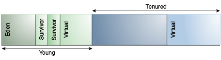

One strength of the Java SE platform is that it shields the developer from the complexity of memory allocation and garbage collection. However, when garbage collection is the principal bottleneck, it is useful to understand some aspects of this hidden implementation. Garbage collectors make assumptions about the way applications use objects, and these are reflected in tunable parameters that can be adjusted for improved performance without sacrificing the power of the abstraction.
An object is considered garbage when it can no longer be reached from any pointer in the running program. The most straightforward garbage collection algorithms iterate over every reachable object. Any objects left over are considered garbage. The time this approach takes is proportional to the number of live objects, which is prohibitive for large applications maintaining lots of live data.
The virtual machine incorporates a number of different garbage collection algorithms that are combined using generational collection. While naive garbage collection examines every live object in the heap, generational collection exploits several empirically observed properties of most applications to minimize the work required to reclaim unused (garbage) objects. The most important of these observed properties is the weak generational hypothesis, which states that most objects survive for only a short period of time.
The blue area in Figure 3-1, "Typical Distribution for Lifetimes of Objects" is a typical distribution for the lifetimes of objects. The x-axis is object lifetimes measured in bytes allocated. The byte count on the y-axis is the total bytes in objects with the corresponding lifetime. The sharp peak at the left represents objects that can be reclaimed (in other words, have "died") shortly after being allocated. Iterator objects, for example, are often alive for the duration of a single loop.
Figure 3-1 Typical Distribution for Lifetimes of Objects

Some objects do live longer, and so the distribution stretches out to the right. For instance, there are typically some objects allocated at initialization that live until the process exits. Between these two extremes are objects that live for the duration of some intermediate computation, seen here as the lump to the right of the initial peak. Some applications have very different looking distributions, but a surprisingly large number possess this general shape. Efficient collection is made possible by focusing on the fact that a majority of objects "die young."
To optimize for this scenario, memory is managed in generations (memory pools holding objects of different ages). Garbage collection occurs in each generation when the generation fills up. The vast majority of objects are allocated in a pool dedicated to young objects (the young generation), and most objects die there. When the young generation fills up, it causes a minor collection in which only the young generation is collected; garbage in other generations is not reclaimed. Minor collections can be optimized, assuming that the weak generational hypothesis holds and most objects in the young generation are garbage and can be reclaimed. The costs of such collections are, to the first order, proportional to the number of live objects being collected; a young generation full of dead objects is collected very quickly. Typically, some fraction of the surviving objects from the young generation are moved to the tenured generation during each minor collection. Eventually, the tenured generation will fill up and must be collected, resulting in a major collection, in which the entire heap is collected. Major collections usually last much longer than minor collections because a significantly larger number of objects are involved.
As noted in the section Ergonomics, ergonomics selects the garbage collector dynamically to provide good performance on a variety of applications. The serial garbage collector is designed for applications with small data sets, and its default parameters were chosen to be effective for most small applications. The parallel or throughput garbage collector is meant to be used with applications that have medium to large data sets. The heap size parameters selected by ergonomics plus the features of the adaptive size policy are meant to provide good performance for server applications. These choices work well in most, but not all, cases, which leads to the central tenet of this document:
|
Note: If garbage collection becomes a bottleneck, you will most likely have to customize the total heap size as well as the sizes of the individual generations. Check the verbose garbage collector output and then explore the sensitivity of your individual performance metric to the garbage collector parameters. |
Figure 3-2, "Default Arrangement of Generations, Except for Parallel Collector and G1" shows the default arrangement of generations (for all collectors with the exception of the parallel collector and G1):
Figure 3-2 Default Arrangement of Generations, Except for Parallel Collector and G1
At initialization, a maximum address space is virtually reserved but not allocated to physical memory unless it is needed. The complete address space reserved for object memory can be divided into the young and tenured generations.
The young generation consists of eden and two survivor spaces. Most objects are initially allocated in eden. One survivor space is empty at any time, and serves as the destination of any live objects in eden; the other survivor space is the destination during the next copying collection. Objects are copied between survivor spaces in this way until they are old enough to be tenured (copied to the tenured generation).
There are two primary measures of garbage collection performance:
Throughput is the percentage of total time not spent in garbage collection considered over long periods of time. Throughput includes time spent in allocation (but tuning for speed of allocation is generally not needed).
Pauses are the times when an application appears unresponsive because garbage collection is occurring.
Users have different requirements of garbage collection. For example, some consider the right metric for a web server to be throughput because pauses during garbage collection may be tolerable or simply obscured by network latencies. However, in an interactive graphics program, even short pauses may negatively affect the user experience.
Some users are sensitive to other considerations. Footprint is the working set of a process, measured in pages and cache lines. On systems with limited physical memory or many processes, footprint may dictate scalability. Promptness is the time between when an object becomes dead and when the memory becomes available, an important consideration for distributed systems, including Remote Method Invocation (RMI).
In general, choosing the size for a particular generation is a trade-off between these considerations. For example, a very large young generation may maximize throughput, but does so at the expense of footprint, promptness, and pause times. Young generation pauses can be minimized by using a small young generation at the expense of throughput. The sizing of one generation does not affect the collection frequency and pause times for another generation.
There is no one right way to choose the size of a generation. The best choice is determined by the way the application uses memory as well as user requirements. Thus the virtual machine's choice of a garbage collector is not always optimal and may be overridden with command-line options described in the section Sizing the Generations.
Throughput and footprint are best measured using metrics particular to the application. For example, the throughput of a web server may be tested using a client load generator, whereas the footprint of the server may be measured on the Solaris operating system using the pmap command. However, pauses due to garbage collection are easily estimated by inspecting the diagnostic output of the virtual machine itself.
The command-line option -verbose:gc causes information about the heap and garbage collection to be printed at each collection. For example, here is output from a large server application:
[GC 325407K->83000K(776768K), 0.2300771 secs] [GC 325816K->83372K(776768K), 0.2454258 secs] [Full GC 267628K->83769K(776768K), 1.8479984 secs]
The output shows two minor collections followed by one major collection. The numbers before and after the arrow (for example, 325407K->83000K from the first line) indicate the combined size of live objects before and after garbage collection, respectively. After minor collections, the size includes some objects that are garbage (no longer alive) but cannot be reclaimed. These objects are either contained in the tenured generation or referenced from the tenured generation.
The next number in parentheses (for example, (776768K) again from the first line) is the committed size of the heap: the amount of space usable for Java objects without requesting more memory from the operating system. Note that this number only includes one of the survivor spaces. Except during a garbage collection, only one survivor space will be used at any given time to store objects.
The last item on the line (for example, 0.2300771 secs) indicates the time taken to perform the collection, which is in this case approximately a quarter of a second.
The format for the major collection in the third line is similar.
|
Note: The format of the output produced by-verbose:gc is subject to change in future releases. |
The command-line option -XX:+PrintGCDetails causes additional information about the collections to be printed. An example of the output with -XX:+PrintGCDetails using the serial garbage collector is shown here.
[GC [DefNew: 64575K->959K(64576K), 0.0457646 secs] 196016K->133633K(261184K), 0.0459067 secs]
This indicates that the minor collection recovered about 98% of the young generation, DefNew: 64575K->959K(64576K) and took 0.0457646 secs (about 45 milliseconds).
The usage of the entire heap was reduced to about 51% (196016K->133633K(261184K)), and there was some slight additional overhead for the collection (over and above the collection of the young generation) as indicated by the final time of 0.0459067 secs.
|
Note: The format of the output produced by-XX:+PrintGCDetails is subject to change in future releases. |
The option -XX:+PrintGCTimeStamps adds a time stamp at the start of each collection. This is useful to see how frequently garbage collections occur.
111.042: [GC 111.042: [DefNew: 8128K->8128K(8128K), 0.0000505 secs]111.042: [Tenured: 18154K->2311K(24576K), 0.1290354 secs] 26282K->2311K(32704K), 0.1293306 secs]
The collection starts about 111 seconds into the execution of the application. The minor collection starts at about the same time. Additionally, the information is shown for a major collection delineated by Tenured. The tenured generation usage was reduced to about 10% (18154K->2311K(24576K)) and took 0.1290354 secs (approximately 130 milliseconds).